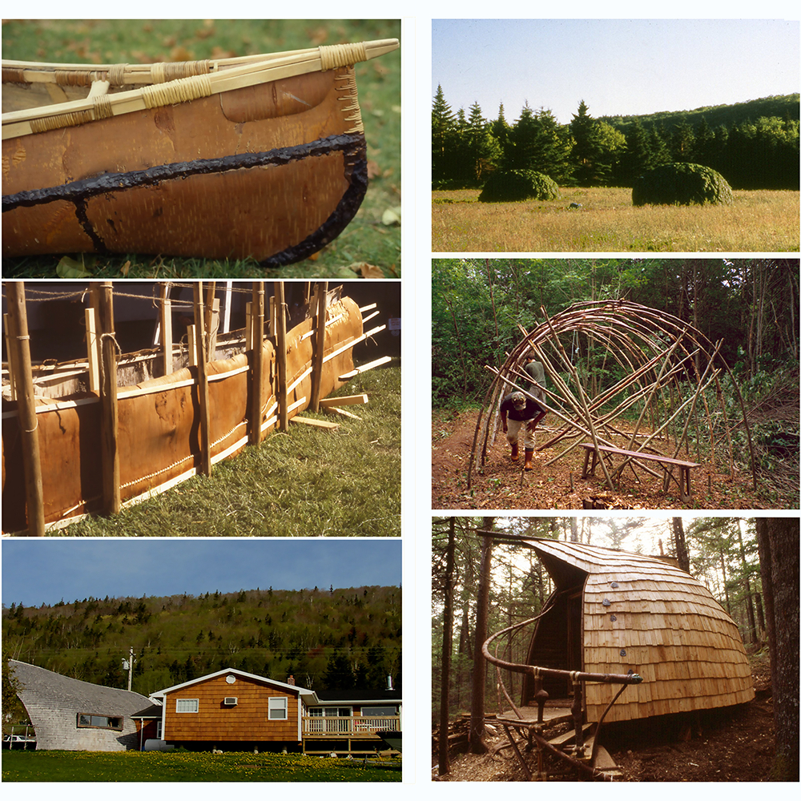

Philosophy
Etuaptmumk: Two Eyed Seeing and Architecture
Written in conversation between Elder Dr. Albert Marshall and architect Richard Kroeker
From a Mi’kmaq perspective, language is fundamental to an understanding of place and plays an active role in how things in that place evolve over time. Understanding and expressing Mi’kmaq concepts requires an intimate knowledge of the language, and attempts to express them in English will always be approximate, with all the potential for inaccuracy and lack of nuance that creates. Mi’kmaq words express things in a dynamic and relational sense; verbs predominate over nouns. Things are not understood as discrete, bounded objects, but expressed in all their active, relational capacity. Built into the language and all ways of knowing is the sense that you avoid giving offense to nature. This is a core notion, guiding principle and overarching way of being.
In the Mi’kmaq world, there is no sense of otherness with regard to nature. The Mi’kmaq words “M’st no’Kmaq”(all my relations) is a direct expression of this. Our relations extend to all creatures and all aspects of nature. Language is employed within the context of collective consciousness. Through the focusing of the mind and framing of concepts, language transmits ideas and actively searches for connections across time and space. Built works begin with words, and so language plays a strong role in the formulation of all things.
The response of a building to its cultural context extends beyond graphic visual references. Form and the generative principles from which it arises are fundamental to architecture. In Mi’kmaq terms, form is related to purpose. It’s legibility and authenticity resides in its function. When efficiency is compromised, it is inevitably at a cost. This is the principle of doing more with less; conservation of material and energy is the objective. Meaningful forms emerge from natural processes. MI’kmaq ways of making and knowing have emerged over a long time in a unique environment. The Mi’kmaq word “netulimk” (provisioning) summarizes this principle: we are supported in all our needs by nature, without compromising our surroundings. The consideration of impacts over time extends to seven generations. Natural forms are analyzed and understood in those terms: as being generated by the principle of their suitability to purpose within their environment, shaped by their many relationships over time.
Historically, buildings in a Mi’kmaq cultural context needed to be efficiently assembled and disassembled by a system of articulated components and connections to respond to changing seasons, locations, and varying social situations. Some parts would be more permanent, remain in location while other parts were transported and regularly replaced. Form-giving forces aren’t external to the place and situation: they follow the internal logic of the locale, material, social dynamic, and anticipated impacts over time. Forms can give expression to the cultural significance of a building in terms of the level of articulation and craft employed in their making. The critical framework for assessing a building are rooted in how it performs, in its practicality within the context of its social purpose, and its long-term consequences for the rest of the natural environment.
Like all aspects of creation in the Mi’kmaq context, materials have an inherent animacy: a spiritual as well as a physical aspect. They contain embodied information and energy which can direct their transformation. As reflected in the language: things are regarded as being active, and defined by their active relationships. We exist in relationship to all other things and that relationship extends beyond an external sensory awareness to a spiritual connection. It is these relationships that give definition to things, not their presumed boundaries as objects.
The collection of material for fabrication is accompanied by a ceremony, as with the gathering of food or medicine. The ceremony is one of asking permission, an explanation of purpose, and an act of thanksgiving. In relationships, all partners have a reciprocal agency, and so it is understood that those materials, as they are transformed, in turn have a role in shaping us: how we feel, think and experience the world around us. This deep connection with the environment is maintained through close observation, through ceremony, through intuition, and through dreams.
An important aspect of Mi’kmaq thinking relevant to understanding form generation, is with regard to symbols, their use and meaning. While architects might concentrate on abstract symbols as easy points of identification or reference, from a Mi’kmaq perspective, symbols have meaning by virtue of the consequent actions they bring about. They exert a force that goes beyond being abstract points of association or memory devices. In Mi’kmaq thinking, symbols are understood as active, dynamic forces. The primary intent of symbols is to register and nurture connections within human society and with all of nature. Dakota elder Chris Leith, with whom we have both worked in Dakota territory, once pointed out that the true symbolic meaning of a flag, conventionally thought of as a signifier of nationality, territory, and patriotic allegiance, was in its potential for use as a blanket to nurture someone, to be wrapped around them for warmth and comfort. This example from Dakota culture also illustrates Mi’kmaq thinking about symbols.
The making of space is related to the making of form and the understanding of natural form. Once created, spaces have their own active energy. There is no empty space. When you enter a space, you enter into its energy. An important aspect of space creation is the avoidance of any hierarchies with regard to occupants. The absence of hierarchy is based in a profound sense of mutual respect. All participants in a space are aspects of the same whole to be treated with an equal respect rooted in compassion. Within Mi’kmaq consciousness, we are understood to derive our strength from the deepening of our connections with our natural context, including the human community, not through a perceived independence created by the isolation of constructed boundaries. All our powers as humans derive from the nurturing of relationships. The purpose of form and space making is not to fortify us against the rest of nature and society, but to enable and deepen the connection. Fostering a spirit of community is the overarching dynamic of space.
Consideration of the scale of a space is a matter of empowerment. One must consider how the scale of the space might avoid the alienation of the users of the space, through separation and isolation. All space making has an ethical dimension in that it must foster respect without reference to hierarchies. A space is a place of coming together of disparate cultures and viewpoints. The primary purpose of space becomes inclusion, not exclusion or separation. While spaces will vary to suit them to their purpose, they are not arranged for the purpose of ranking into lesser or greater spaces, or of “served and servant” spaces, as some architects sometimes refer to them. Light, colour, textures, acoustics, legibility, and relationships to other spaces give a space its active capacity. Spaces should accommodate many different occasions and be capable of adapting to the cycles of time.
The circle is the space of meeting and social interaction. Each member of a circle is an equal participant. The speaker or performer remains within the circle, and having begun to speak, is given the full time they require, without interruption. The option to speak passes around the circle to the next person, in a clockwise direction, until each viewpoint has been fully presented. In this way, many viewpoints are brought to the subject under discussion, and these can be expressed in a non-hierarchical setting based on mutual respect. This circular space of meeting, and the accompanying underlying ethos apply no matter what the outer shape of the enclosure in which it takes place.
Curved, circular forms are also made for their inherent structural stability, and for their efficiency in enclosing more useable area with less material than other plan geometries. Curved forms efficiently deflect the forces of wind and precipitation from all directions, distributing directional loads throughout the structure.
Spaces give the occupants a sense of presence and location. Spaces respond to direction, with each direction bringing its own forces to bear on the arrangement of spaces and the resulting form. The path of the sun, the winds, and views orient us within a space, and connect us to the other forces of nature.
This connection to the land and place is established and renewed through ceremonies, often involving music. Those with the ability to understand and gather medicines from the land often speak of the plants singing to them. The Mi’kmaq word for medicine, (“Medideskewey”) is the word which can be literally translated as “something which makes a sound”. If you are attuned to the land, the medicine you are seeking will address you. All medicine acts in this way. Just as we ask permission when collecting building materials, food, or medicines, permission is asked and thanks are offered for use of the land. An expression of deep appreciation engages the singing voice; singing connects to the spirit intrinsic to all things. Certain people are designated as keepers of the songs pertaining to particular places, occasions and events in a discernment process.
Mi’kmaqi consists of seven territories of distinct ecological zones. Leaving the territory in which one lives and entering another territory is done with consideration and with ceremony. The word “Kwe” is shouted to announce a crossing into new territory. There was traditionally a song corresponding to each particular territory. People are welcomed into new territory by being taught the song of that territory. This is another aspect of the concept of consonance with the land.
As with social relationships, relationships within all creation are viewed as non-hierarchical. Humans are not superior beings with respect to each other or to other beings in the natural world. Within the language, there is no sense of ownership or dominance over any aspect of nature. In a language where verbs predominate, there are many verb tenses enabling a subtle understanding and expression of the complex relationships within nature.
The things we make or build are considered a transformed aspect of nature. Built artefacts are not exclusively owned as the property of the maker, but remain as a part of nature at large, taking on their own power to be agents in enacting transformative relationships. Language provides the guiding energy for the initiation of ideas and for their emergence into forms.
Language provides the means for shaping and sharing knowledge. Knowledge is itself alive and dynamic. Transmitting knowledge has an aspect of gardening: when it is tended, it grows. Knowledge will seek and find the place where it is directed or attracted. Initiating the flow of knowledge begins with the framing of a question. The form of the question presents the vessel into which knowledge will flow. Changing the way in which a question is formulated opens new possibilities of learning.
There is no reference point that is outside nature, and so there is no sense of the otherness of nature. Language and knowledge are animate aspects of nature, and not a platform, frame or abstract scaffolding positioned outside nature. This all-encompassing nature is in its essence compassionate and nurturing. When there is disharmony, illness, or need, nature is the source of all remedies, summed up in the Mi’kmaq word “netulimk” . The Mi’kmaq language is oriented toward thankfulness and reverence to nature at all times in all things.
The power of language is in its ability to produce transformation. It gives rise to new forms and new dynamics. It has a direct power to heal, and is used with a consciousness of its power. If an idea comes about as result of an individual dream, vision, or insight, it is activated through language and must enter collective consciousness before coming to realization. It is understood as having emerged from a collective world of active knowledge, so there isn’t a sense of the “originality” or personal ownership of a vision or of ideas. No one owns an idea or has exclusive rights to it. It has emerged from the living body of knowledge that is a part of nature. It takes on its transformative power by being shared.
New ideas are assessed in terms of their effects or potential effects on human society and the rest of nature; the seven-generation time frame applies. The principle of maintaining harmony and attunement applies. For information to be alive and have currency, it must remain in circulation. It can’t be bottled up in a book or kept private amongst a few initiates. To encapsulate information in this way will cause it to stagnate, like a stagnant pool relative to a flowing river. Just as all things are alive, they also have the potential to communicate and partake in the flow of information. All are present in a vast network and flow of relationships.
The colonization experience, with the catastrophic effect on the population, its relentless suppression of all aspects of Mi’kmaq culture, and its polarization of world views, created a schism in architectural continuity. Patterns of living, access to land and resources, and the relationships with the environment changed rapidly and profoundly. The architecture of the colonists was based on European precedents. They aspired to match stylistic precedents from Europe, whose architecture was primarily one of stereotomic elements, the shaping and stacking of relatively massive components. Our academic histories traditionally often have focussed on attempts at architectural permanence. Anything that didn’t aspire to permanence was relegated to the fringes of academic architectural histories. In this tradition, architectural and artistic expressions are often understood as expressions of our individuality, and our spaces and cities are understood as defenses against nature based on the illusory notion that we can achieve independence from the very forces that formed us and nurture us.
Indigenous Mi’kmaq architecture, by contrast, was conscious of its position within the natural cycles.
Mi’kmaq building strategies are essentially tectonic. Building involved a system of often light-weight components and connections that allowed for a response to changing seasons and adapted to differing occasions in ways that created seamless continuity with the natural context. It consisted of articulated components and layers that allowed for mobility as well as adaptation to the seasons. Over time, the colonists found that their largely stereotomic architecture could not respond well to the North Eastern North American climate and material context, often owing more to stylistic preoccupations and an aesthetic agenda than to functionalism. Within this region, current main stream building practices, particularly in housing, have adopted the more Indigenous approach of using light wooden frames strengthened and insulated by the addition of layers, in a composite strategy that responds to available resource, climate, and can accommodate a variety of social and cultural uses.
Like dwellings, canoes were built with an overall understanding of material, connection and information flow. They were lightweight, durable, and efficient. Information required to shape canoes, as well as other structures, did not traditionally require drawings, but is inherent in the construction process itself, where one step becomes the template for the next. As with dwellings, the overall form of the canoe, and its detailed connections respond to the context in which canoe will be used: whether ocean waves, fast streams, windy open lake conditions, or small streams overhung with trees. Regional formal variations are often classified as expressions of culture, but to understand them completely, they need to be analyzed in the context of their response to their material environments, and the functional requirements related to the dynamic context and uses to which they are put within that context.
In any construction project, defined roles were traditionally given to women and to men, for the purpose of ensuring that both male and female energies have a presence in the project, during the work process and in its realization. These are general strategies which involved an understanding of material properties, special connections, and an understanding of both embodied energy and continuing energy needs. The use of thermal mass, attention to air quality, seasonal adaptability, social adaptability, material properties, and life cycle environmental impacts were well understood as the drivers of decisions regarding the form.
In the context of the United Nations Declaration of the Rights of Indigenous People (https://www.un.org/development/desa/indigenouspeoples/declaration-on-the-rights-of-indigenous-peoples.html), officially endorsed by the Canadian Government in May of 2016, represents an appropriate advance in the continuing process of decolonization. Architecture is a major expression of how a society sees itself in relation to surrounding nature and to other societies. There must be an acknowledgement of this in the processes by which buildings are designed, procured and implemented within Indigenous territories.
The dominant contemporary reading of architecture as a cultural practice takes place within an assumed technological context, often regarded as separate from the natural realm. Indigenous approaches can teach us that responding to defined functional and environmental issues can lead to designs that are appropriate, and authentic cultural expressions. Buildings derive their identity and authenticity from the direct, articulated dynamics which shaped them, and an understanding of how they act upon us and the environments in which they exist.
“European based” Science aspires to objectivity, tending to abstract and obscure the human element into issues of economics or politics. Use of the concept of objectivity easily becomes a means to privilege the interests of power elites. Architecture is directly engaged with political and economic processes, often put forward as objective issues. Two Eyed Seeing offers another awareness that puts these charged issues into a more appropriate framework. clarifying to whose benefits the purportedly “objective” issues directing procurement processes, are directed Architecture is always a collective endeavour. In producing architecture, there needs to be an honest assessment of where the economic benefits reside in the procurement processes, and funding structures. Architects are the technicians who are charged with realizing a collective vision. Included is an advocacy for human values including advocacy for nature which gave birth to us and sustains us. The Mi’kmaq perspective grounds architectural practice and critique firmly in the immediate, present reality of ethics and in authenticity. It will lead to original work unique to this place by connecting to our origins: our deep history.
Two Eyed Seeing can move us beyond perceiving ourselves as outside observers from a superior vantage point in a set of hierarchical relationships. It offers a means of communicating between ways of knowing and perceiving in a place of mutual respect.